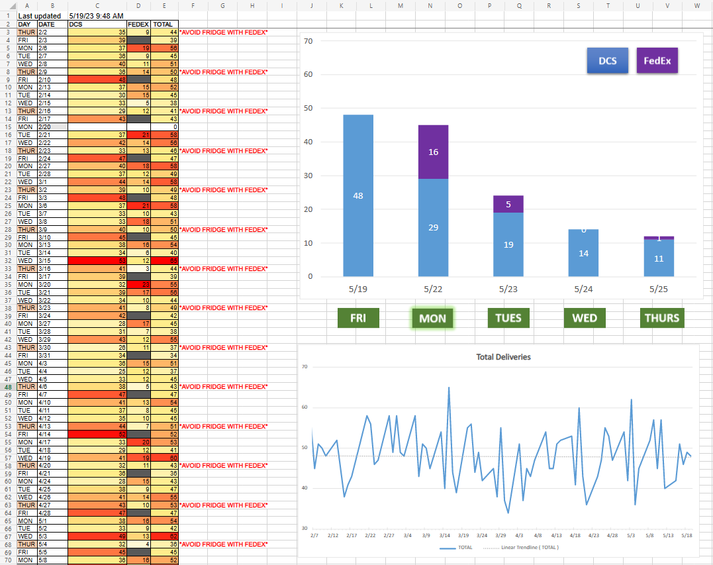
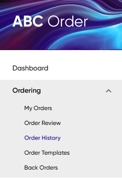
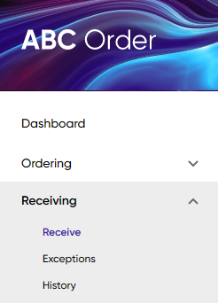
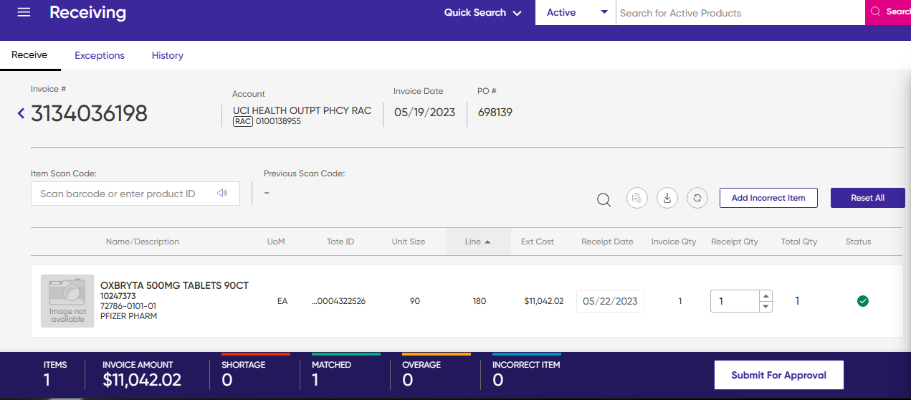
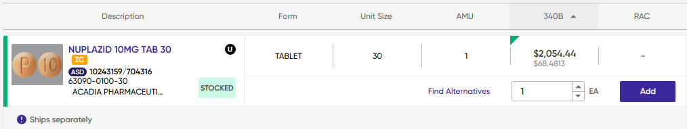

Email Refill Call Goals
Send an email to the refill team, copying PV2 and supervisors, providing the refill call goals for the day. Additionally, include any remaining refill calls from previous days and remind the team to check the Refill Review queue and resolve any pending requests in WAM.
Update Shipping Dashboard
Count the DCS and FedEx shipments for the upcoming 5 business days from the WAM Shipping queue (custom queue), and update the numbers in the Excel spreadsheet available at the following link:
Delivery Shipments.xlsxSend a reminder in the Refill Team group chat on Teams to schedule the shipments evenly across the week instead of concentrating too much on any particular day.
Receive Drop Ship
FedEx drop ship packages are directly delivered to Outpatient Pharmacy, while UPS drop ship packages are typically delivered to Inpatient Pharmacy. UPS packages usually consist of drugs sourced from Amerisourcebergen's alternative distribution center, directly from the manufacturer (such as Ninlaro, Prevymis, and manufacturer replacements), and some third-party vendor drugs (like Aubagio).
For any missing packages, check with Inpatient Pharmacy store room staff and the dock. If the packages are not found, contact Infusion Pharmacy and IDS pharmacy to see if they have received our missing packages. The tracking number can be accessed on the ABC Order website under Ordering > Order History . If the tracking number is not listed, reach out to Amerisourcebergen for tracking assistance.
| Contact # | |
|---|---|
| Store Room | 456-xxxx |
| Infusion Pharmacy | 456-xxxx |
| IDS Pharmacy | 456-xxxx |
| Amerisourcebergen | 844-222-2273 |
Updating Inventory
When scanning drugs into Epic Inventory, prioritize the ones that are pending from the FOA Fill on arrival area. Ensure that both the lot number and expiration date are recorded. Manually update the inventory for third-party vendor drugs and drugs that cannot be scanned into Epic. Include the quantity received, purchase order number, lot number, and expiration date in the comments.
Confirming Invoices
Confirm the invoices in Epic for the received drugs, and record the corresponding PO and invoice numbers on the Pharmacist Acceptance of Drop Shipment Order form (signed by the receiving pharmacist).
Scan T3 documents Packing slips that include the transaction history (TH), transaction information (TI), and transaction statement (TS). associated with drugs sourced from third-party vendors or directly from the manufacturer into the Shared Drive for uploading onto Tracelink.
Submit the invoices for approval on the ABC Order website, under Receiving > Receive.
Order Drop Ship
To ensure timely delivery, submit drop ship orders by 1 PM from Monday to Thursday. With the exception of urgent FOA orders, it is best to avoid submitting drop ship orders on Fridays to avoid potential delivery exceptions as the weekend approaches.
Drop ship drugs are identified in the ABC Order catalog with the DROPSHIP label or the Ship separately indicator.
Requesting technicians place these drugs in a separate order draft in Epic labeled as SP Dropship. Most drugs are available for purchase from both our 340b and RAC accounts. However, some drugs are exclusively 340b and require verification of 340b accumulations on Macro Helix. Exclusively 340b drugs can be identified in the ABC Order catalog by the absence of the RAC price tag.
